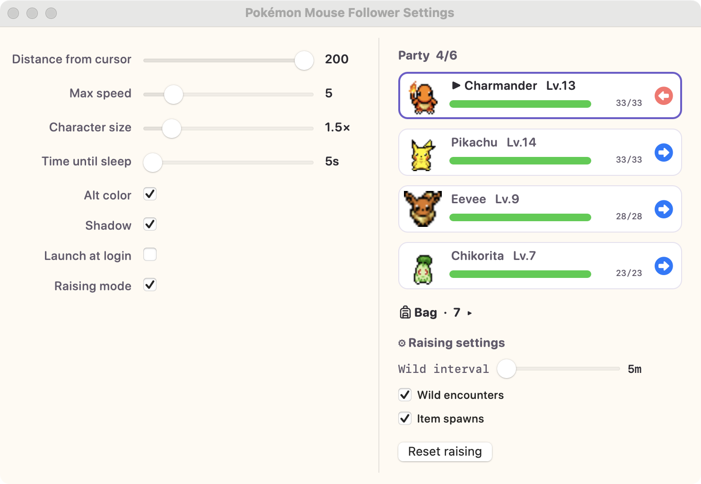

カーソルを追いかけるポケモン。
小さな macOS メニューバーアプリ。ドット絵のポケモンが画面を歩き、マウスを追いかけ、止まると丸くなって眠ります。育成モードをオンにすれば、バトル・捕獲・進化も。
無料 · アカウント不要 · ドラッグ＆ドロップで導入。

小さいのに、愛らしい
すべてメニューバーで静かに動きます。一度設定すれば、存在を忘れるほど。
メニューバー専用
Dock アイコンなし、メニューバーに肉球ひとつ。作業の邪魔をしません。
物理ベースの追従
カーソルと距離を保ち、自分の速度・加速度で動くので、貼り付いているのではなく生きているように感じられます。
8方向アニメーション
進む方向に合わせてスプライトが向きを変えます。本物のドット絵の質感そのまま。
待機 → 睡眠
止まると落ち着いて眠り、マウスを動かすとすぐに目を覚まします。
ポケモン251匹
第1・2世代すべて、うち124匹は色違いも。プレビュー・矢印・ランダムボタンで選べます。
育成モード
野生との遭遇、画面上のオートバトル、経験値と進化、モンスターボールでの捕獲、6匹のパーティとアイテムバッグ。
クリック透過・マルチモニター
作業を妨げない透明オーバーレイ、ディスプレイ間もなめらかに移動します。

育成モード — 1.1 の新機能
フォロワーを自分で育てるポケモンに。クラシックな御三家6匹から1匹選ぶと:
- 野生ポケモンがデスクトップに現れてうろつきます — 近づくとタイプ相性・わざエフェクト・状態異常が反映されたオートバトルがオーバーレイ上で展開
- 勝つと経験値を獲得: レベルアップは頭上に表示され、新しいわざを覚え、進化はクラシックなホワイトアウト演出で再生
- 弱った野生をモンスターボールで捕獲して最大6匹のパーティに
- アイテムがデスクトップに落ちます — 歩いて拾い、キズぐすり・ボール・進化アイテムをバッグから使用
- 傷ついたメンバーはバトル外で回復（眠っている間はさらに速く）、深夜0時にはパーティ全体が全回復

自分好みに
メニューバーから Settings を開くと、変更はすべて即座に反映されます:
- 選択中キャラのプレビュー、◀ ▶ 矢印と ランダム ボタン
- カーソルとの距離、最高速度、キャラの大きさ
- 眠るまでの時間
- 色違いスプライトと、やわらかい足元の影
- ログイン時に起動
動きの仕組み
移動はマウス速度とは無関係です — 速く動かすと一度遅れ、自分のペースで追いつきます。
歩く → 停止 → 待機 → [眠るまでの時間] → 睡眠
↑ カーソル移動 ↓
└──── 歩く ────┘
30秒でインストール
Xcode も開発者ツールも不要。ダウンロードしてドラッグするだけ。
ダウンロード
Releases から最新の .dmg を入手して開きます。
Applications へドラッグ
Pokémon Mouse Follower をアプリケーションフォルダに入れます。
起動
Launchpad から起動すると、メニューバーに 🐾 が出てポケモンがマウスを追いかけ始めます。
よくある質問
Pokémon Mouse Follower とは何ですか？
無料・オープンソースの macOS メニューバーアプリです。ドット絵のポケモンが画面を歩き回り、マウスカーソルを追いかけます。カーソルと少し距離を保ち、自分の速度と加速度で動きます。
無料ですか？
はい — 完全に無料でオープンソースです。ソースコードはすべて GitHub で公開されています。
対応する macOS のバージョンは？
macOS 13（Ventura）以降、Apple Silicon と Intel Mac の両方（universal ビルド）。
Mac が重くなったり、クリックを妨げたりしますか？
いいえ。透明でクリックを透過するオーバーレイに描かれる軽量なメニューバーアプリなので、下のアプリを妨げず、Dock アイコンもありません。
ポケモンは何匹から選べますか？
第1・2世代の251匹、加えて色違いがある124匹の別カラースプライト。プレビュー・矢印・ランダムボタンで見て回れます。
育成モードとは？
フォロワーを自分で育てるポケモンに変えるオプションモードです。野生ポケモンがデスクトップに出現し、オーバーレイ上でオートバトル（タイプ相性、わざエフェクト、状態異常）が展開されます。勝つと経験値と進化を獲得し、モンスターボールで捕獲して最大6匹のパーティとアイテムバッグを運用できます。進行状況は自動保存されます。
インストール方法は？
Releases から .dmg を入手し、アプリを Applications にドラッグして起動します。macOS でそのまま開き、開発者ツールは不要です。
アンインストール方法は？
メニューバーの 🐾 アイコン → 終了 のあと、アプリケーションからアプリをゴミ箱へ移動します。
スプライトはどこから来ていますか？
ドットアニメーションはコミュニティプロジェクトの PMD Sprite Collab から来ています。非商用の個人ファンプロジェクトで、Pokémon © Nintendo / Creatures Inc. / GAME FREAK inc.